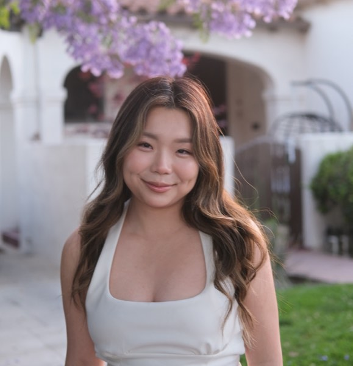

LOS ANGELES · TAIWANESE PERSPECTIVE
A beautiful life,
thoughtfully built
Data scientist by day — a girl with a curious mind, a love for pretty things, and a life beyond the spreadsheet
Find your next little rabbit hole ↓
a little ambitiona lot of lifeTHE GIRL BEHIND THE SPREADSHEET
MAKE YOURSELF AT HOME
01 / FOR BRANDS
Let’s make something
worth caring about
Let's work together!Thoughtful stories where your brand becomes part of a real life — from office-to-weekend style to LA discoveries, home rituals, and the tools I actually use
I love sharing the things I actually use and love—and there are quite a few ♡ I’m sure we can find a way to create something together
Let’s talk ideas ↗Or say hello on Instagram ↗02 / COME FOR THE PRETTY STAY FOR THE PERSON
A little glimpse into my life ✨
03 / THE LITTLE THINGS
Pretty things
Considered choices
A little corner for outfits and pieces that catch my eye
Browse my outfit edit ↗A little treat for you ♡
My travel card ✈️
American Express Platinum
I use my points for business-class flights and hotel stays—a little more comfort for the trips I look forward to ♡
Apply with my link for up to 175,000 points ↗Points may help you redeem two Taiwan–US business-class tickets ✈️
Points required vary by airline program, route, dates and award availability; 175,000 points may not cover two tickets · Terms apply · I may earn 45,000 points for a qualifying referral ♡
with a reason
04 / A LITTLE CLARITY
Thinking about your
next chapter?
If you’re here for career support, there’s a place for that too